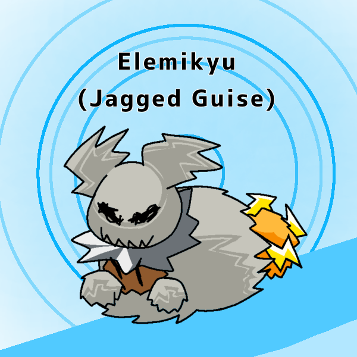
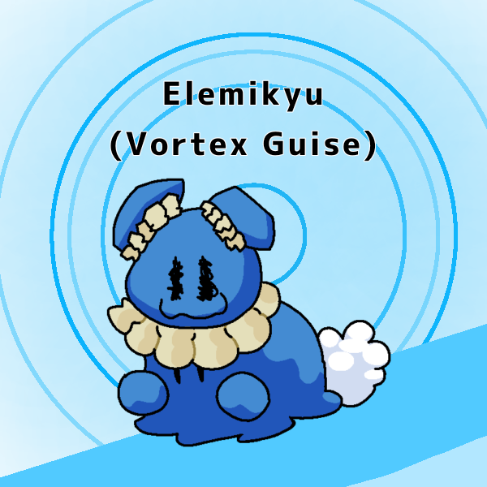

Fakemon
This page is currently under construction. Can you fetch me the spanner?
One of the contests hosted on the Silk Rock Discord server is Fakemon design, in which contestants design Fakemon and then vote for the best one at the end of the design period.
Round 1
1st Place (tie)
Gabbunel
Author: Rebmiami
1st Place (tie)

Elemikyu
Author: Ninanite
3rd Place
Musguchillo
Author: ChefCursedCrust
4th Place

Millitrain
Author: Goombud
5th Place

Sobrancelhan
Author: Paperboi64
Gabbunel
Author: Rebmiami
Gabbunel Cry
Hoovel Cry
Ravel Cry
Type: Normal/Fire
Category: Rave Pokémon
Abilities:
- Soundproof
- Intimidate
- Up To Eleven (all sound-based moves gain +1 priority)
Pokedex Entries: Gabbunel loudly bang on their drum-like tail with their spiked arms whenever they can. Many Trainers avoid this Pokémon, as they see it as a nuisance, but some enjoy the loud music it creates. / A now-famous DJ started their career by enlisting the help of a Gabbunel. Since then, this Pokémon has become a common sight in dance parties across the region.
Signature Moves:
- Filter Sweep: (normal, sound move) The user filters the frequencies on the battlefield, swapping stat changes with the opponent.
- Rave Stab: (fire, sound move) The user launches a piercing burst of sound that deals damage, burns the target, and has a 30% chance to flinch.
Pre-Evolutions:
Hoovel (Second Stage)
Type: Normal/Fire
Category: Rave Pokémon
Pokedex Entries: The rectangular scales at the end of a Hoovel's tail resonate at certain frequencies when struck. The vibrations travel through its tail and emit a loud sound from the ring on its chest. / This Pokémon can often be found playing music for groups of Ravel. The Hoovel who play the catchiest melodies are regarded as the leader of the pack.
Ravel (First Stage)
Type: Normal
Category: Rave Pokémon
Pokedex Entries: Wild Ravel travel in tightly-knit groups. When one Ravel decides to do something, the rest often follow, even if bad things happen as a result. / Ravel have deep respect for musical talent. If a Trainer can impress a Ravel with musical skill, this Pokémon will stay by their side no matter what.
Elemikyu
Author: Ninanite


Names: Mimikyu (Silkian Form), Elemkiyu (Fuzzy, Jagged, Vortex Guise)
Types: Ghost, Bug, Steel, Rock
Category: Mimic Pokemon
Abilities:
- Repair: Mimikyu or it's evolutions will repair their costume if they're at less than 25% of their health, restroing them of 20hp, can be used once per battle
- Guise Change: by using a certain item on an Elemkiyu in battle it will gain the type of a different guise, and no moves will be super effective towards it.
Pokédex entries can be found in the images.
Musguchillo
Author: ChefCursedCrust
Type: Grass/Poison
Category: Nettle Pokémon
Abilities:
- Effect Spore
- Guts
- Sharpness
- Parry: If the user gets hit by a direct attack, its move on the next turn will always go first. (+1 priority)
Pokedex Entries: Musguchillo has a prideful personality and tends to form bitter rivalries with other aggressive Pokemon. It has a particular distaste for Tsareena.
While the reason is currently unknown, Musguchillo seems to enjoy protecting weak or fragile Pokemon. It can often be found defending wild Lilligant from harm.
The poisonous spikes lining the bladed arms of this Pokemon cause a burning pain when touched. Despite this, many trainers adore Musguchillo thanks to its appearance.
Signature Moves:
- Leaf fissure: Power 120, Acc 100%, High critical ratio
- Embedded needle: power 90, accuracy 95%, Upon contact small needles embed in the opponent, 50/50 chance to burn or poison 80% chance of effect
Pre-Evolution
Escoveno (First Stage)
Name:
Type: Grass/Poison
Category: Pretentious Pokémon
Abilities:
- Prankster
- Showoff: User becomes center of attention for 5 turns after using any status move.
- Parry: If the user gets hit by a direct attack, its move on the next turn will always go first. (+1 priority)
Pokedex Entries: This Pokemon produces a sweet tea-like liquid by distilling various leaves. The chemicals in this beverage react with the toxins in Escoveno's body, increasing the potency of its poison.
Escoveno is known for its haughty and overconfident personality. This Pokemon often gets into fights against opponents it is not ready to handle.
Signature Moves:
- Tea drink: Heals 50% HP, taunts opponent: cant use status moves for 3 turns, cures status conditions and stat debuffs
- Contemptful splash: Power: 90 accuracy 95%, a water, fire, poison, and grass move with a 100% chance to burn
Millitrain
Author: Goombud
Tramopod, the Tram Pokémon
Abilities: Steam engine, electric shock
Entry: Tramopod is a scavenger, eating discarded vehicle parts. Likes staying in urban areas, is not very fast.
Centirail, the Metro Pokémon
Abilities: Steam engine, speed boost, electric shock
Entry: Centirail is a friendly (don’t let the angry eyes fool you) Pokémon that does not mind being surrounded by a lot of people or Pokémon. Prefers to stay within urban areas.
Millitrain, the Heavy Rail Pokémon
Abilities: steam engine, heavy shock, bite
Entry: Millitrain is a ravenous beast always searching to consume vehicles, discarded or not. Millitrains enjoy being together in urban areas, but also enjoy rolling through the outskirts at high speeds.
Sobrancelhan
Author: Paperboi64
Láitorvido, Voadornfuso, Sobrancelhan Cry
Types: Fighting/Fire
Category: Emoji Pokemon
Ability: Reactionary; Whenever a critical hit is landed the opponent will get mad, doing extra damage their next turn, but not being able to move the following one.
Pokedex Entries:
1 - Láitorvido
Types: Fighting
Category: Emoji Pokemon
Láitorvido likes to read books whenever it's not fighting other Pokémon, it's advised to not mess with them if they're reading.
2 - Voadornfuso
Types: Fighting/Fire
Category: Emoji Pokemon
Voafornfuso is said to use attract very often, this behavior hasn't been explained, but is believed to be caused by some energy in it's pink cheeks.
3 - Sobrancelhan
Types: Fighting/Fire
Category: Emoji Pokemon
Sobrancelhan are very calm and collected, usually staying away from other Pokémon, however it gives in easily to a fight.
Round 2
1st Place
Typug
Author: ChefCursedCrust
2nd Place (tie)
Abeilléra
Author: Ninanite
2nd Place (tie)
Tatorumagu
Author: Paperboi64
Typug
Author: ChefCursedCrust
Types: Bug Electric
Category : The Computer Worm Pokémon
Pokedex Entry: These Pokémon are commonly found in areas with high amounts of computers and wires. They are able to plug into and take over computers, with their faces displaying as emoticons resembling those typed on a keyboard. Some are friendly, using computers to communicate to trainers. While others act maliciously, bricking computers or even frying them.
Ability: Overload; electric terrain is triggered when damaged
Signature Move: Infestation
Abeilléra
Author: Ninanite
Types: Steel, Bug
Category : The Camera Pokémon
Abilities
- Flashbang: If a Pokémon tries to inflict a status effect, there is a 20% chance the opponent will be burned instead.
- Lens Flare (Hidden): If the opponent tries to use a status move while burned, and at low health, they will lose 5 HP.
Pokedex Entries:
Scarareil are a very timid species of Pokémon, usually using their ability to generate blinding light to isolate themselves. They are seen very often in caves and near urban areas
According to all known laws of aviation, Abeilléra should not be able to fly, but it does anyway. They are quite hard to come across naturally, they usually nest on top of buildings.
Signature Move:
- Countdown Flash: Attacks using its flash two moves later, it is still able to attack in those two moves, and will attack for two turns whenever the Countdown Flash occurs, Countdown Flash always hits last.
Tatorumagu
Author: Paperboi64
Type: Water/Ground
Category: Turtle Pokemon
Ability: If hit with a critical hit, it will panic and use its strongest attack, without input from the trainer.
Pokedex entry: This friend shaped turtle was born with its shell freakishly similar to a mug! A group of "Pokemon Theorists" theorized the designs of mugs to be inspired after its shell, the theory was very easily proved false.
Round 3
This round is currently ongoing. Join the Silk Rock Games Discord server to compete!